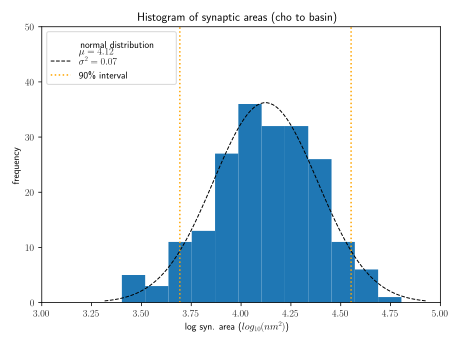

Cardona lab
Bentley et al. (2016). The Multilayer Connectome of Caenorhabditis elegans

Berck et al. (2016) The wiring diagram of a glomerular olfactory system
Acknowledgements
Cardona lab
Scientific software and Ilastik developers
Janelia/ Cambridge graduate programs